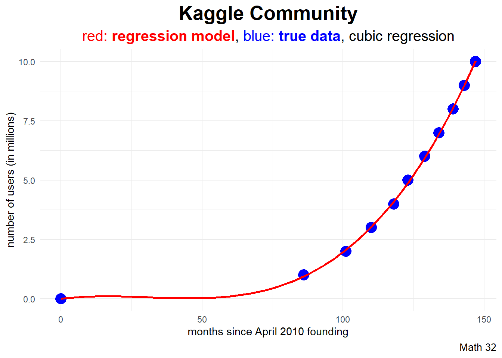

30: Regression Analysis
Goal: Discuss the validity of regression models
Objectives:
- explore nonlinear regression models
- practice using the coefficient of determination
Setting
Kaggle was founded in April 2010 and is a data science resource that hosts many public data sets and hosts machine learning competitions.
- predictor variable
\[X: \text{months since founding}\]
- response variable
\[Y: \text{number of users (in millions)}\]
Data
This data set is relatively small, so we can quickly transcribe it into an R data frame.
df <- data.frame(
months = c(0,86, 101, 110, 118, 123, 129, 134, 139, 143, 147),
users = 0:10
)Source: https://www.kaggle.com/discussions/general/332147
Linear Model
\[\hat{y} = a + bx\]
In model equations, the response variable is listed first
\[\sim \quad \text{:} \quad \text{explained by}\]
then the predictor variables.
linear_model <- lm(users ~ months, data = df)linear_model
Call:
lm(formula = users ~ months, data = df)
Coefficients:
(Intercept) months
-2.38965 0.06609 Prediction
Example: As of this writing (April 2023), there have been 156 months since Kaggle was established. Use a linear regression model to predict how many users are on Kaggle.
predict(linear_model, newdata = data.frame(months = 156)) 1
7.919814 Data Visualization
In ggplot2, the geom_smooth layer can quickly graph the linear regression model.
`geom_smooth()` using formula = 'y ~ x'subtitle_string = "<span style='color:#FF0000'>red: <b>regression model</b></span>,
<span style='color:#0000FF'>blue: <b>true data</b></span>"
df |>
ggplot(aes(x = months, y = users)) +
geom_point(color = "blue", size = 3) +
geom_smooth(color = "red", method = "lm", se = FALSE) +
labs(title = "Kaggle Community",
subtitle = subtitle_string,
caption = "Math 32",
x = "months since April 2010 founding",
y = "number of users (in millions)") +
theme_minimal() +
theme(plot.subtitle = element_markdown())Quadratic Regression
\[\hat{y} = a + bx + cx^{2}\]
By default, R uses orthogonal polynomials in model creation. If we would rather gather easy-to-interpret coefficients in the model form above, use raw = TRUE.
d2_model <- lm(users ~ poly(months, 2, raw = TRUE), data = df)d2_model
Call:
lm(formula = users ~ poly(months, 2, raw = TRUE), data = df)
Coefficients:
(Intercept) poly(months, 2, raw = TRUE)1
0.06293 -0.08169
poly(months, 2, raw = TRUE)2
0.00100 Example: As of this writing (April 2023), there have been 156 months since Kaggle was established. Use a quadratic regression model to predict how many users are on Kaggle.
predict(d2_model, newdata = data.frame(months = 156)) 1
11.66495 Data Visualization
In ggplot2, the geom_smooth layer can quickly graph the polynomial regression model.
subtitle_string = "<span style='color:#FF0000'>red: <b>regression model</b></span>,
<span style='color:#0000FF'>blue: <b>true data</b></span>, quadratic regression"
df |>
ggplot(aes(x = months, y = users)) +
geom_point(color = "blue", size = 4) +
geom_smooth(color = "red",
formula = y ~ poly(x,2, raw = TRUE),
method = "lm",
se = FALSE) +
labs(title = "Kaggle Community",
subtitle = subtitle_string,
caption = "Math 32",
x = "months since April 2010 founding",
y = "number of users (in millions)") +
theme_minimal() +
theme(plot.title = element_text(face = "bold",
hjust = 0.5,
size = 20),
plot.subtitle = element_markdown(hjust = 0.5,
size = 15),
plot.caption = element_text(size = 10))Cubic Regression
\[\hat{y} = a + bx + cx^{2} + dx^{3}\]
By default, R uses orthogonal polynomials in model creation. If we would rather gather easy-to-interpret coefficients in the model form above, use raw = TRUE.
d3_model <- lm(users ~ poly(months, 3, raw = TRUE), data = df)d3_model
Call:
lm(formula = users ~ poly(months, 3, raw = TRUE), data = df)
Coefficients:
(Intercept) poly(months, 3, raw = TRUE)1
1.360e-03 1.485e-02
poly(months, 3, raw = TRUE)2 poly(months, 3, raw = TRUE)3
-6.207e-04 6.691e-06 Example: As of this writing (April 2023), there have been 156 months since Kaggle was established. Use a cubic regression model to predict how many users are on Kaggle.
predict(d3_model, newdata = data.frame(months = 156)) 1
12.61522 Data Visualization
In ggplot2, the geom_smooth layer can quickly graph the polynomial regression model.

subtitle_string = "<span style='color:#FF0000'>red: <b>regression model</b></span>,
<span style='color:#0000FF'>blue: <b>true data</b></span>, cubic regression"
df |>
ggplot(aes(x = months, y = users)) +
geom_point(color = "blue", size = 5) +
geom_smooth(color = "red",
formula = y ~ poly(x,3, raw = TRUE),
method = "lm",
se = FALSE) +
labs(title = "Kaggle Community",
subtitle = subtitle_string,
caption = "Math 32",
x = "months since April 2010 founding",
y = "number of users (in millions)") +
theme_minimal() +
theme(plot.title = element_text(face = "bold",
hjust = 0.5,
size = 20),
plot.subtitle = element_markdown(hjust = 0.5,
size = 15),
plot.caption = element_text(size = 10))Analysis of Variance
- denote \(y_{i}\) for true outcomes
- denote \(\hat{y}_{i}\) for estimates (or predictions)
- then \(y_{i} - \hat{y}_{i}\) is the \(i^{\text{th}}\) residual
\[SS_{\text{res}} = \displaystyle\sum_{i=1}^{n}(y_{i} - \hat{y_{i}})^{2}\]
\[SS_{\text{tot}} = \displaystyle\sum_{i=1}^{n}(y_{i} - \bar{y_{i}})^{2}\]
Variation
\[R^{2} = 1 - \displaystyle\frac{SS_{\text{res}}}{SS_{\text{tot}}} = \displaystyle\frac{\text{explained variation}}{\text{total variation}}\]
- for linear regression, \(R^{2}\) is the square of correlation
- range of \(R^{2}\) is \([0,1]\)
- higher \(R^{2}\) implies better model
Adjusted Coefficient of Determination
To later mitigate issues such as the curse of dimensionality in more complex models, statisticians recommend use of an adjusted \(R^{2}\) such as
\[R^{2} = 1 - \displaystyle\frac{SS_{\text{res}}}{SS_{\text{tot}}} \cdot \displaystyle\frac{df_{\text{tot}}}{df_{\text{res}}}\]
summary(linear_model)
Call:
lm(formula = users ~ months, data = df)
Residuals:
Min 1Q Median 3Q Max
-2.2938 -1.6442 -0.1355 1.5715 2.6750
Coefficients:
Estimate Std. Error t value Pr(>|t|)
(Intercept) -2.38965 1.78199 -1.341 0.21278
months 0.06609 0.01503 4.398 0.00172 **
---
Signif. codes: 0 '***' 0.001 '**' 0.01 '*' 0.05 '.' 0.1 ' ' 1
Residual standard error: 1.97 on 9 degrees of freedom
Multiple R-squared: 0.6825, Adjusted R-squared: 0.6472
F-statistic: 19.35 on 1 and 9 DF, p-value: 0.001724Exponential Regression
\[\hat{y} = a*b^{x}\]
# shouldn't compute ln 0
df$users[1] <- 0.1
exp_model <- lm(log(users) ~ months, data = df)# coefficients of ln a and ln b
exp_model
Call:
lm(formula = log(users) ~ months, data = df)
Coefficients:
(Intercept) months
-2.44344 0.03226 Example: As of this writing (April 2023), there have been 156 months since Kaggle was established. Use an exponential regression model to predict how many users are on Kaggle.
a <- exp(summary(exp_model)$coefficients[1])
b <- exp(summary(exp_model)$coefficients[2])
a*b^{156}[1] 13.31783Data Visualization
In ggplot2, the geom_function layer can quickly graph a custom function.
subtitle_string = "<span style='color:#FF0000'>red: <b>regression model</b></span>,
<span style='color:#0000FF'>blue: <b>true data</b></span>, exponential regression"
f <- function(x) { a*b^x }
df |>
ggplot(aes(x = months, y = users)) +
geom_point(color = "blue", size = 5) +
geom_function(fun = f, color = "red", linewidth = 2) +
labs(title = "Kaggle Community",
subtitle = subtitle_string,
caption = "Math 32",
x = "months since April 2010 founding",
y = "number of users (in millions)") +
theme_minimal() +
theme(plot.title = element_text(face = "bold",
hjust = 0.5,
size = 20),
plot.subtitle = element_markdown(hjust = 0.5,
size = 15),
plot.caption = element_text(size = 10))Model Selection
Let us use the adjusted \(R^{2}\) values to judge our models.
summary(linear_model)$adj.r.squared[1] 0.6472128summary(d2_model)$adj.r.squared[1] 0.9923513summary(d3_model)$adj.r.squared[1] 0.9994897summary(exp_model)$adj.r.squared[1] 0.9899031What Happened
On April 17, 2023, Kaggle surpassed 13 million users!
predict(d3_model, newdata = data.frame(months = 156)) 1
12.61522 Looking Ahead
- WHW10
- LHW9
Final Exam will be on May 6
- more information in weekly announcement